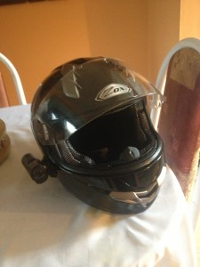

What is the Contour Roam?
The Contour Roam is a sleek and small HD action camera comparable to the well-known GoPro. The Contour Roam is geared to be as easily usable for anyone as possible. It offers a quick-slide record button; simply slide forward to record, slide back to shut off - with nearly zero wait-time. It features a stunning 170 degree wide-angle lens which can also rotate to your liking and records at resolutions ranging from 480 all the way to full-HD of 1080. It as well has a laser-level and status feature so you know exactly if your camera is mounted level, the battery status and memory space on your micro-SD card.
Why do I need a camera when riding?
Mainly for me, it was for security. Security against false-claims on accidents for people hitting me while riding my motorcycle, which if you ride, you know that there are a lot of close calls! It gives you a great sense of being worry-free when you get in an accident that you have evidence to back up your insurance claims. Plus, recording some adventurous rides and sharing it on YouTube is also pretty cool! You might pick up an impressed chick from it.... heh, yeah, right.
But in this day-in-age, cameras are becoming more and more popular, not just for motorcyclists like myself but also for cars - hey, take a look at Russian dash-cams sure, haha. This is because more drivers are now on the streets each year and more careless drivers go along with that. Not to mention the people who text/eat/do-makeup and other things while driving. It's certainly dangerous out there!
Take this example for instance..._ If you're riding your motorcycle through a green-light intersection, and some guy in a truck blows through the red-light and hits you. By the time the cops, ambulances and other officials arrive; who's to say who blew through the intersection? The guy in the truck could've easily claimed that you did, even though you never did such a thing_. This is when you can review the camera data - the officials and insurance will easily be able to see, you had a green-light, and the truck hit you from the side. Seriously, it'll save your ass in an insurance claim and help out greatly in court - it pays for itself in a way.
My reasons for buying...
Personally for me, the selling point was the price (which I picked up for $160 new on eBay, compare to GoPro's $350 price) and the size; I didn't want something as big and bulky as the GoPro, I wanted something smaller that I could mount to the side of my helmet, not weight it down and be discrete.

On the left is my full-face helmet, the right is an image I pulled from Google which shows the GoPro. In my opinion, the Contour is sleeker and smaller, which is what I was looking for in a camera. However, yes, the GoPro does offer more features such as WiFi streaming, picture-snapshots, external microphone and more - but its nothing the average person requires riding around town.
It offers a great video quality, so save yourself the extra couple hundred bucks and get something simple that works. The Contour even comes with a couple of great M1 adhesive mounts (those things wont come off), a protective case and lens cover, and several after-market mounts you can buy to stick it anywhere. It also comes with software which you can adjust the microphone sensitivity, the video quality, video imports and more.
It's really a great overall camera for anybody to use for anytype of application or use which won't dent your wallet.